杜詩綿
獲董事會禮聘之台大醫院資深教授，帶領醫院正式落成啟業，開啟花蓮慈院醫療服務新頁，任內因肝癌辭世。
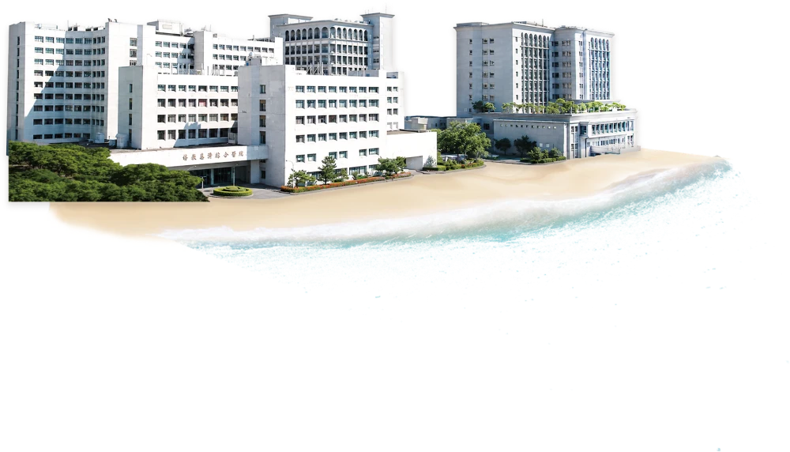

40 Years by the Numbers
臺灣第10名
Newsweek 攜手 Statista 公布 2026 World's Best Hospitals，花蓮慈濟醫院晉升臺灣前 35 大醫院中第 10 名。
61項
近 10 年獲生策會 SNQ 國家品質標章認證，肯定各科別照護品質居全國領先水準。
東臺灣唯一
通過門診、急診、住院、手術照護等六大智慧醫療服務流程標章認證，全東臺灣唯一獲此殊榮的醫院。
7,254例
自 1993 年成立骨髓捐贈資料中心以來，截至 2026 年 6 月已促成 7,254 例造血幹細胞捐贈，接力延續無數血液病患的生命。
21項
累計獲得 21 項國家新創獎，將臨床研究成果轉化為實際應用，持續深耕創新研發。
第6度通過
2024 年第六度通過醫學中心評鑑，持續肩負東臺灣急重症後送醫院之責。
Words to Walk By
合抱之木，生於毫末；九層之臺，起於累土；千里之行，始於足下。
信己無私，信人有愛。
一個五毛錢，創造慈善奇蹟；一支棉花棒，諦造人間至情。
Walking Through Four Decades
證嚴上人帶領慈濟委員，於花蓮市仁愛街廿八號設立義診所，展開醫療志業，一周兩次為貧病者提供醫療服務，持續十五年之久。

有感於花東地區醫療資源嚴重不足，上人思索生命尊嚴應平等無異，為徹底解決東部貧困的根源，於一九七九年五月十日的慈濟委員聯誼會上宣布興建醫院構想，希望能永久延續佛教的精神慧命。
1983年，花蓮慈濟醫院於國福里首度動土，不料隨後因國防部的「佳山計畫」軍事需求，原定院址被收回，建院計畫被迫中斷。證嚴上人與同仁重新奔走一年多，終於在花蓮農校實習農場（現址）覓得新地，並於隔年4月24日舉行第二次動土典禮，象徵篳路藍縷的醫療願景正式邁入施工階段。
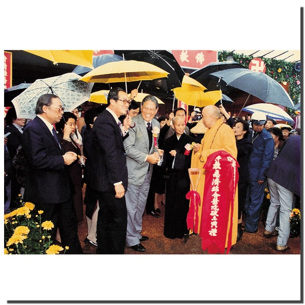
2月6日完成法人登記，健全行政管理體系。積極進行人才培育，並與台大醫院洽談建教合作，確保啟業後能提供與台北同步之醫療品質。
董事會延攬臺大醫院資深教授杜詩綿、曾文賓分別擔任慈院首任院長與副院長，為隔年啟業的醫療團隊確立領導核心。
1986年8月17日，花蓮慈濟醫院在萬眾期盼下正式落成啟業。這座由證嚴上人發願、克服兩次動土波折才建成的醫療堡壘，不僅填補了當年東台灣醫療資源的匱乏，更創下台灣醫院不收「住院保證金」的先河，成為台灣人道醫療史的重要轉折點。

7月5日杜詩綿院長因肝癌辭世，副院長曾文賓於16日繼任院長，接續帶領醫院穩健成長。
10月受政府委託成立，致力非親屬骨髓捐贈推廣。將「救人一命，無損己身」轉化為全民運動，使台灣成為全球華人骨髓配對之重鎮。
醫療志業跨足高等教育，培育東部在地醫學人才，為花東醫療永續發展扎下根基。
加入台灣器官移植網絡，通過腎臟移植合格評鑑。透過專業團隊培訓，賦予衰竭器官病患重生機會，縮小城鄉急重症治療落差。
投入安寧療護服務，以身心靈全人照顧陪伴末期病人與家屬，成為東部安寧照護的重要據點。
器官移植小組在兩次腦死判定後，成功完成東部首例腎臟移植，象徵花蓮慈院在精密外科與後備支持系統上已具備區域領先之實力。
器官移植團隊再創里程碑，為東部肝臟移植醫療寫下新頁。
曾文賓院長功成身退受聘榮譽院長，由副院長陳英和接任，延續一代接一代的傳承精神。
醫療網絡向南延伸，補足花東縱谷南段醫療資源，落實醫療不漏接的照護版圖。
集集大地震重創中臺灣，慈院醫療團當天即趕赴災區搶救生命，累積日後歷次震災救援的實戰經驗。
通過衛生署評鑑，正式成為東台灣唯一醫學中心，承擔教學、研究與急重症後送三位一體之責，確保花東鄉親不需翻山越嶺即可獲得最優質醫療。

陳英和院長受聘名譽院長，副院長林欣榮接任第四任院長，同年帶領醫院升格為東臺灣第一家醫學中心。
2月8日成功為泰雅族青年進行肝移植，家屬打破族群觀念全器官捐贈，不僅救人一命，更開啟東部器官捐贈之社會風氣。
專注於臨床轉譯研究，重點投入惡性腦膠質瘤與幹細胞治療等先端領域，旨在將實驗室成果轉化為實際臨床救護。
12月醫療團隊於災後三天即抵達現場，開啟長達四年的後續關懷，標誌花蓮慈院正式將影響力擴散至國際人道醫療救護領域。
小兒外科團隊跨海評估分割可行性，4月16日接來花蓮完成分割手術，寫下東部醫院執行國際人道醫療的重要里程碑，姊妹倆日後更返臺就讀慈濟大學。
派遣102名醫護分五梯次前往斯里蘭卡，提供逾27,000人次醫療服務，展現於廢墟與野戰環境下的強大機動救護能力。
投入微創手術研究與人才儲備，開啟精準微創外科新頁；同年赴巴基斯坦震災義診，展現醫療人文精神。
5月強震後大批醫護自費自假奔赴災區，三個月內服務45,082人次，熱食供應逾80萬份，深度整合醫療救助與社會心理支持。
創新研發中心發現小分子藥物能抑制GBM腫瘤生長，完成技術移轉，開啟自研新藥邁向臨床試驗之里程碑。
導入平板電腦與智慧載具，整合醫療資訊系統，醫護人員可即時調閱影像與報告，大幅提升臨床決策效率與精準度。
8月14日正式運作，首例為泌尿科攝護腺切除，開啟東部精準微創手術時代，減少手術出血量與住院天數，提升病患生活品質。
整形暨重建外科分享5例國際淋巴水腫成功治療案例，其中印尼病患右腿腫脹達65公升、是健康腳的15倍，經手術重獲正常生活，展現守護東南亞疑難重症病患的能力。
證嚴上人交付「品質提升、人才培育」兩大任務，林欣榮院長帶領團隊追求品質與國際化，為日後晉身全球最佳醫院奠定基礎。
整合多年累積之去識別化病歷，發展AI預測模型，針對肺部影像與骨齡分析導入AI輔助判讀，減少放射科負荷並降低誤診率。
匯集體系內八家醫院與國內外學者，成為整合醫學、護理、公共衛生與創新科技的學術平台，強化研究能量與國際能見度。
成為全台首批獲准執行細胞治療之機構，針對幹細胞治療脊髓損傷與退化性關節炎展開臨床應用，開啟再生醫學在東部之實踐。
2月6日花蓮強震重創市區多棟大樓，醫院啟動大量傷患應變機制，成為此後歷次震災韌性應變的重要起點。
骨髓幹細胞中心成立25年、捐贈個案突破5000例，遍布五大洲31國；同年配合新南向政策與菲律賓三家醫院簽署國際醫衛合作備忘錄，醫療影響力正式跨出臺灣。
採用全球先進AI運算系統，疫情期間開發遠距視訊診察與智慧機器人清消，落實「零接觸醫療」並大幅縮短急性心肌梗塞診斷時間。

列車於清水隧道口出軌，造成重大傷亡，花蓮慈院醫療團隊第一時間趕抵現場協調傷患檢傷與急救，成為東部重大交通事故緊急醫療應變的關鍵一役。
在印尼疫情最嚴峻期間持續培訓當地醫護，11月20日協助印尼慈濟醫院完成首例兒童造血幹細胞移植，幫助罹患重度地中海型貧血的病童重獲新生。
9月引進最新系統，透過雷射定位與懸吊手臂，提升婦癌與泌尿腫瘤手術之精密度，泌尿部案例累計突破500例。

1月2日為瀰漫性大B細胞淋巴瘤病人完成全臺第一例健保給付CAR-T細胞輸注治療，開啟血癌免疫治療新篇章。
《Newsweek》攜手Statista公布全球最佳醫院排行，花蓮慈濟醫院於臺灣前35大醫院中排名第15，是六都以外排名最高的醫學中心。
規模7.2強震重創花蓮，醫院於震後隨即啟動大量傷患機制，當日累計收治75名傷患，展現歷次震災淬鍊出的應變量能。
一次通過門診、住院、行政管理、檢驗、急診、手術照護等六大智慧醫療服務流程標章，成為東臺灣唯一獲頒智慧醫院全機構標章的醫療院所。
花蓮縣政府攜手花蓮慈院舉辦中西醫合療元年啟動大會，腦傷男童與巴金森病友到場分享康復成果，宣示中西醫精準醫療邁向制度化推廣新階段。
馬太鞍溪堰塞湖溢流重創光復鄉，醫療團隊9月24日起設立三處醫療站、24小時駐診18天，並完成全臺首例災區「視訊醫療結合無人機送藥」創舉，是近十年韌性醫療機制淬鍊出的具體實踐。
11月15日落成，由慈濟援建，採柱中柱耐震工法，安置受災弱勢民眾，體現醫療志業對地區災後韌性與社會安定的深層承諾。

結合基因定序、人工智慧與中醫本草的精準醫療平台正式上線，將中西醫精準醫療從臨床實踐推向系統化、可複製的新階段。
《Newsweek》攜手Statista公布2026全球最佳醫院排行，花蓮慈濟醫院從2024年臺灣第15名躍升至第10名，醫療專業與照護品質獲國際肯定。
計畫轉型為「全方位智慧綠能醫院」，結合物聯網管理能耗，推動AI驅動之長照生態系，目標成為全台排名前十且具國際典範之醫療中心。

Four Decades of Leadership
四十年來，七位院長接力傳承（林欣榮兩度掌舵），帶領花蓮慈濟醫院從草創茁壯到躋身全球最佳醫院之列。
獲董事會禮聘之台大醫院資深教授，帶領醫院正式落成啟業，開啟花蓮慈院醫療服務新頁，任內因肝癌辭世。
由首任副院長繼任院長，穩健帶領醫院成長十年，任內促成骨髓捐贈資料中心成立、慈濟醫學院創校等重要里程碑。
接續帶領醫院深化精進，任內器官移植等專科團隊持續茁壯，延續一代接一代的傳承精神。
2002 年接任，同年帶領醫院升格為東臺灣第一家醫學中心，任內持續壯大重症醫療量能。
接續帶領醫院運作，銜接醫學中心升格後的下一階段發展。
其後長期擔任慈濟醫療財團法人執行長，統籌體系內各醫院運作與發展。
任內推動「菲律賓長期醫衛合作計畫」，將醫療人文精神向外拓展至國際。
2016 年回任院長，肩負品質提升與人才培育兩大任務，為醫院晉身全球最佳醫院奠定基礎。
Building History 1983 – 1998
← 左右滑動瀏覽建院歷史影像 →


Golden Hands, Timeless Care
花蓮慈院自 2015 年推動「黃金人口計畫」，讓退休同仁得以回聘續任，把最寶貴的經驗與初心，繼續留在崗位上傳承。
張坤昇 42 歲那年因思念花蓮的山海回鄉應徵司機，從 X 光車、乳癌篩檢車開到救護車，穿梭花東大城小鎮。屆齡退休後仍樂於回聘，「希望每天都能開開心心地上班。」
陳惠珍在醫院啟業隔年就進入慈院，從批價、病歷申報到會計、成本分析一路歷練，工整細膩的帳務功夫讓同事讚嘆她像台影印機，見證慈院財務體系從無到有的成長。
何蓮嬌從照顧肺結核病患的護理背景轉入牙科技術領域，2024 年罹患第三期乳癌仍堅持工作到治療前一刻。「我特別體會到上人所說不分宗教的大愛」，抗癌路上依然如花綻放。
郝知欣 35 年前從高雄返鄉，加入剛啟業不久的花蓮慈院心臟外科，操作葉克膜與人工心肺機為病人維繫生命循環。退休後回聘傳承技術，8 年間培訓出 4 位正式體外循環師。
陳素華護理資歷 41 年，2021 年退休後隨即回聘，主動承擔起秀林鄉山地離島醫療給付計畫，風雨無阻將醫療與藥物準時送到部落，「只要能力所及，我都很樂意配合。」
石美惠從書記一路歷練成人資專業人員，退休後仍選擇回到慈濟，參與退休回聘、母性保護等多項制度規劃。「因為很愛慈濟，所以想為慈濟做事。」
Stories of Second Chances
四十年來，醫護團隊在無數分秒必爭的時刻接力守護生命。以下是近年幾則真實搶救故事。
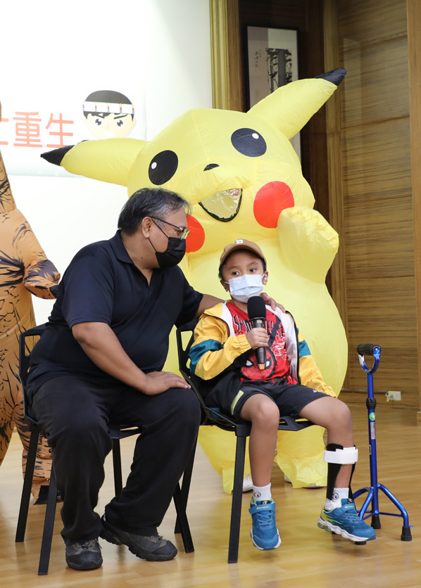
颱風吹落女兒牆擊中男孩頭部，昏迷指數僅 3 分。神經外科團隊緊急開顱減壓，上人叮囑啟動中西醫合療，針灸與復健接力，男孩從瀕死邊緣站起，隔年重返校園。
閱讀完整故事 →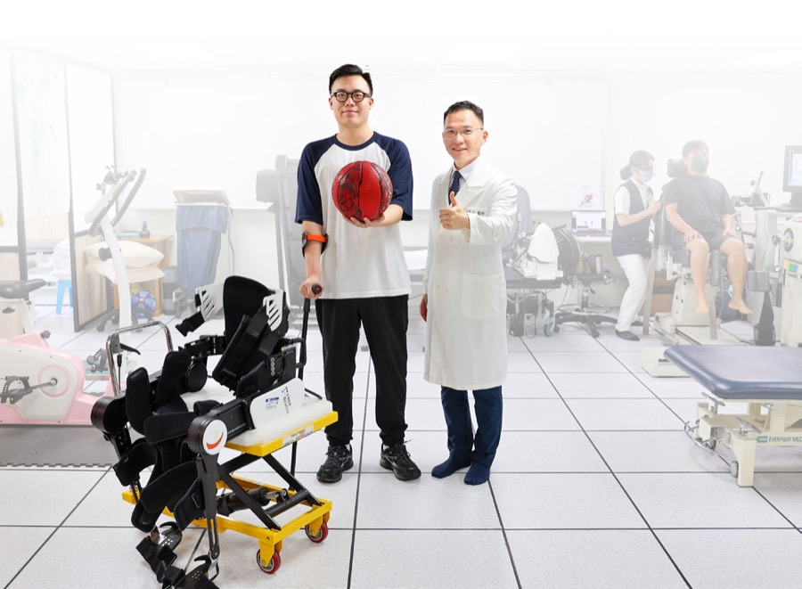
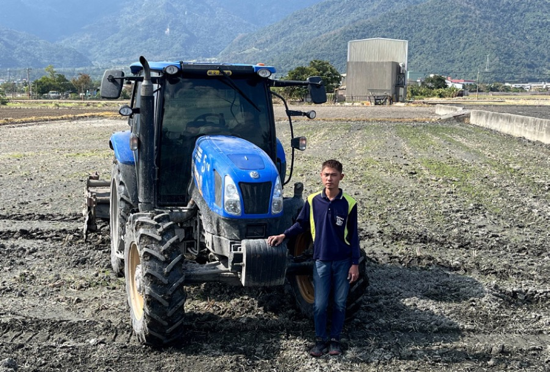
27 歲的王先生務農途中突然腦中風昏倒，經綠色通道緊急轉送，醫療團隊成功取出超過 4 公分血栓，術後語言與活動能力完全恢復，15 天內康復出院並重返農務工作。
閱讀完整故事 →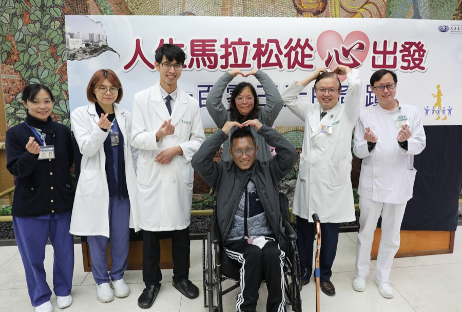
參賽選手黃先生跑道上突發心室顫動，急救團隊三度裝上葉克膜，跨越十個醫療科團隊接力搶救。歷經 103 天治療與多次生死交關，終於在元宵節前康復出院，與家人團聚。
閱讀完整故事 →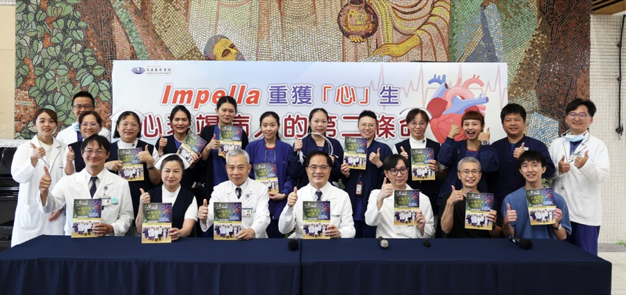
53 歲周先生因流感併發猛爆性心肌炎，心臟功能急速衰竭。醫療團隊引進全球最小的暫時性人工心臟 Impella，搭配葉克膜穩定血流，成功幫助他重生出院。
閱讀完整故事 →花蓮慈院自 2020 年起與消防局合作到院前心電圖判讀，急性心肌梗塞病人抵院前即啟動綠色通道，讓花蓮縣心肌梗塞救回率從全臺倒數，躍升至全臺第二，五年間挽救逾百條生命。
閱讀完整故事 →Anniversary Booklet
40 周年 Podcast 專區
翻閱手冊前，先聽兩集深度故事，了解本刊亮點
正在載入年冊，請稍候…
手機建議直接下載 PDF 閱覽：
下載40周年特刊PDFBooks by Our Own Physicians
四十年來，慈院醫護團隊筆耕不輟，將行醫路上的專業與感動集結成書。以下精選幾本代表作。
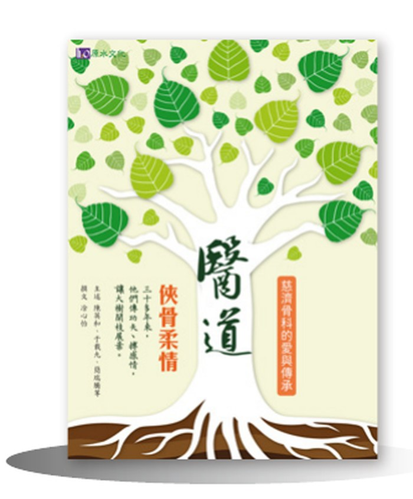
慈濟骨科的愛與傳承
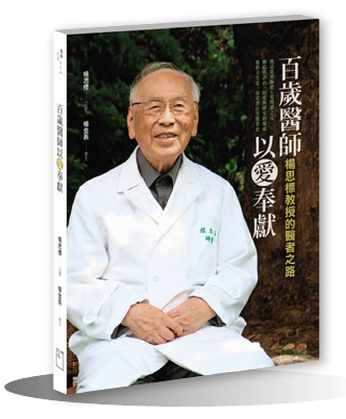
楊思標教授的醫者之路
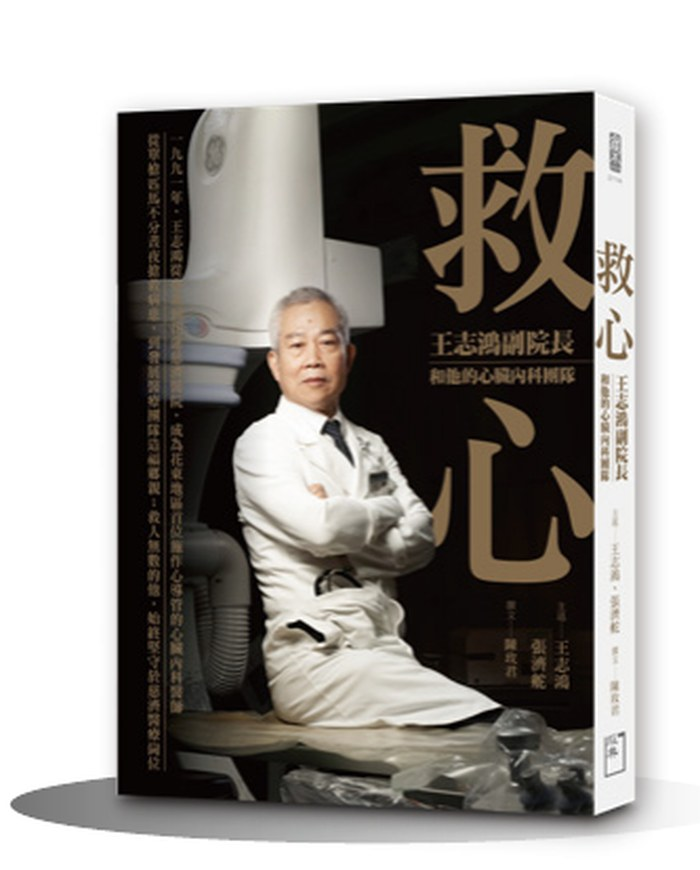
王志鴻副院長和他的心臟內科團隊
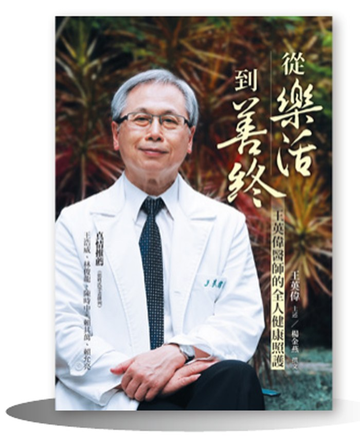
王英偉醫師的全人健康照護
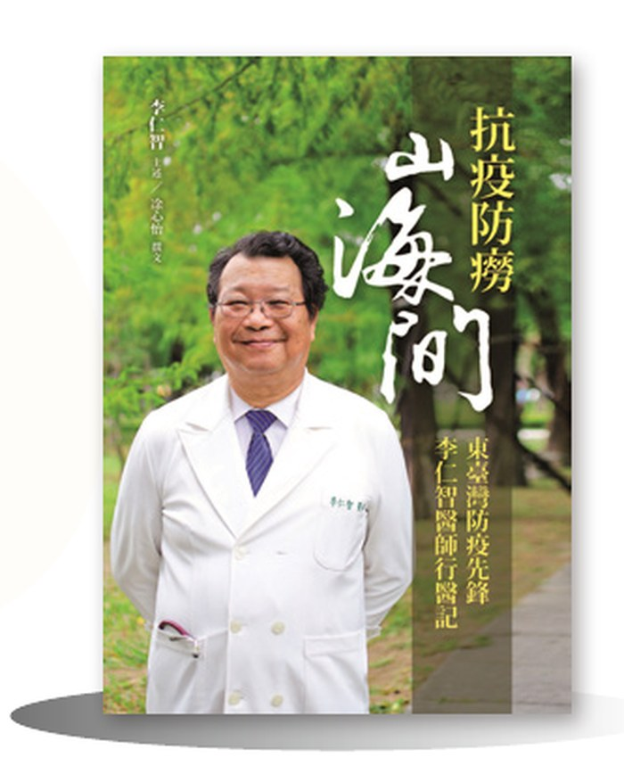
東臺灣防疫先鋒李仁智醫師行醫記
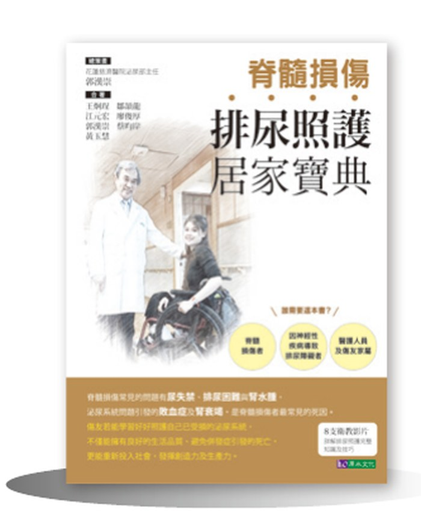
照顧脊髓損傷者的泌尿系統，重拾生活品質
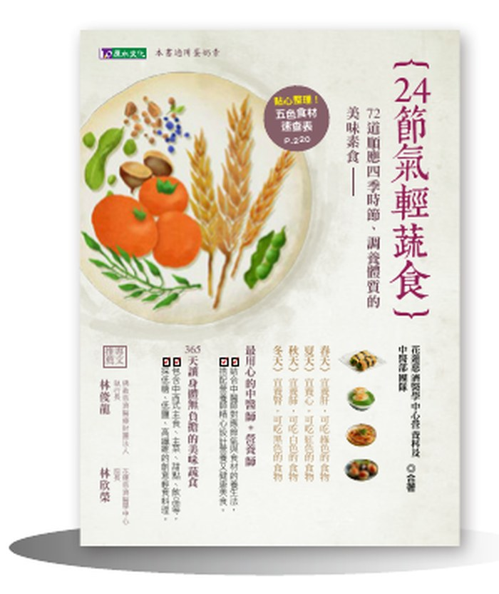
72道順應四季時節、調養體質的美味素食
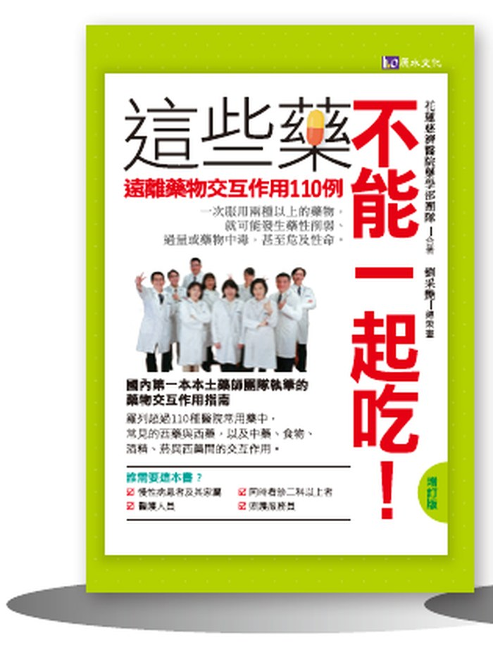
遠離藥物交互作用110例（增訂版）